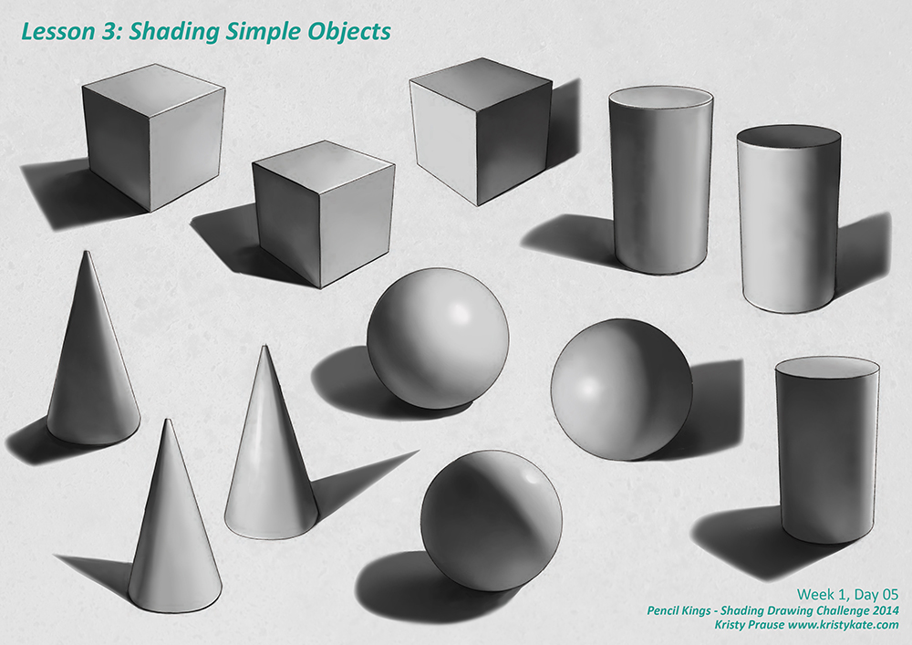
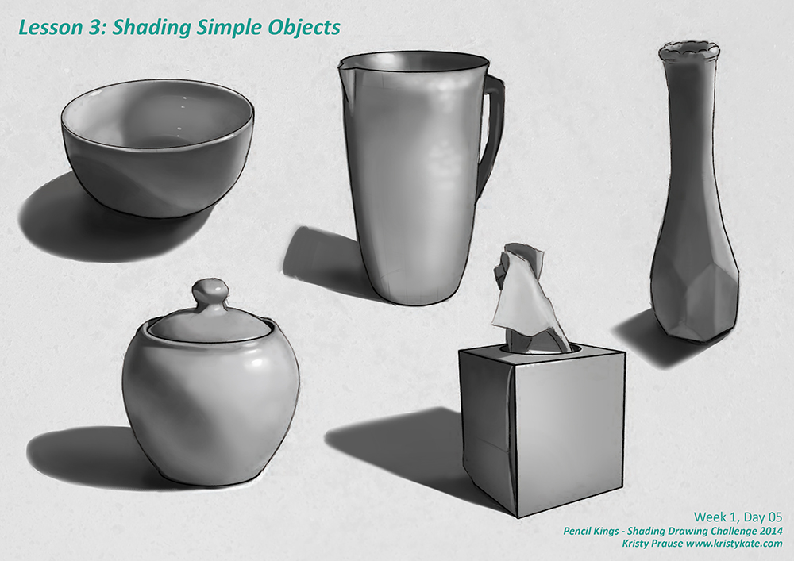
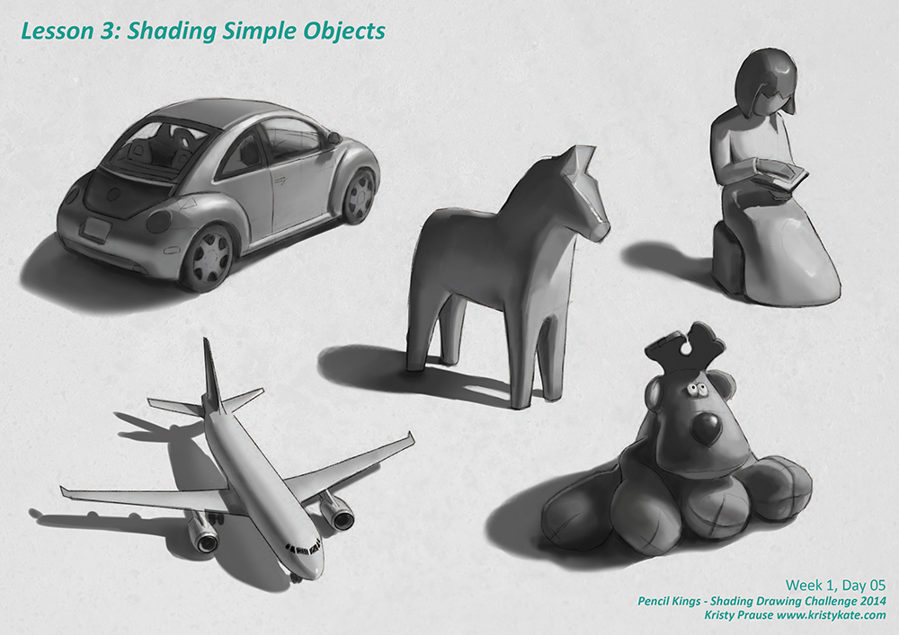
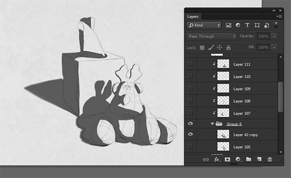
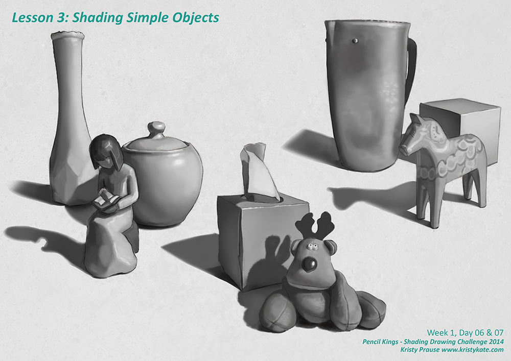

SDC - Shading Simple Objects
For the month of September I'm taking part in Pencil Kings Shading Drawing Challenge, with instruction from the lovely Diane Kraus. You can see Diane's work on her website www.dianekraus.com.
This post covers my studies from Lesson 3: Shading Simple Objects. My earlier studies can be viewed in the following posts:
* Learning Values with the Shading Drawing Challenge (SDC)
* SDC - Planes and Blocking in the Shadow Value
+ + +
Shading Simple Objects
In Lesson 3: Shading Simple Objects, the fun really began as we took what we learned from the previous two lessons and applied it to shading objects with the full value scale.

The recommended approach to shading objects is to concentrate on each major dark and light element of the form one-by-one before blending. Starting with blocking in the shadow to separate light and shade, and then adding the midtone, core shadow, cast shadow and light tone. Highlights are added last, after the other values have been blended.


Below is a quick step-by-step process I used for shading one of the still life examples (photo reference supplied by our instructor, Diane). At the point I created this .gif I had already flattened a bunch of layers in Photoshop, but it still gives a pretty good idea of how I approach digital painting. (I'll create another step-by-step demonstration in a future post).

In the process of digital painting, I like to keep things flexible by working on multiple layers. I typically flatten or group the layers as I go, depending on the needs of the project.
In the above image you can see that I've grouped two layers into the folder labelled "Group 4". They are the blocked in shadow and midtone. On top of this are a stack of layers set as clipping masks. They are applied to Group 4, which means these new layers won't allow paint outside the blocked in shadow and midtone areas.
This is especially handy because I can then paint in big strokes without painting "outside the lines". By using the layers, any unwanted brush work within the painted area can also be simply removed with the eraser tool - and won't harm any of the work in the layers below.
As for blending with Photoshop brushes; I currently use the Hard Round brush for most of my painting. The key is in altering it's features. I have the Size and Opacity set to pressure (a great benefit of using a tablet!) and am constantly changing the hardness of the brush edge using the shortcut Shift + [ or ] (the size of the brush can also be scaled up or down with [ or ] ). Beyond that, I might manually change the Opacity and Flow for a subtle, gradual build up of paint for those super soft transitions, but otherwise, that's about it.
Here's the final, with a couple of other still life set ups.

Well, this marks the end of Week 1. I'm super excited because up next is SDC Lesson 4: The Planes of the Head - yes! Back to anatomy!
Bring on the challenge!
+ + +
Enjoy art? I'd love to hear from you! Connect with me by leaving a comment or getting in contact via Twitter or Facebook.